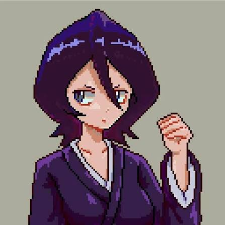

Introdução
Por: Gustavo Correia
Olá! Bem vindos a minha página de Bleach, eu sou o Dr.Urahara e aqui vou falar de curiosidades sobre os personagens dessa obra.
Vou colocar curiosidades sobre personagens de Bleach.
Por: Gustavo Correia
Olá! Bem vindos a minha página de Bleach, eu sou o Dr.Urahara e aqui vou falar de curiosidades sobre os personagens dessa obra.
Por: Gustavo Correia
• Nome com duplo sentido: Significa "aquele que protege", mas também soa como "morango" em japonês, inspirando seu cabelo laranja. • Ligação com o número 15: Ichi (1) e Go (5) formam o número 15, que é sua idade inicial, o dia de seu aniversário (15 de julho) e aparece em suas roupas e quarto. • Visual descartado: Ele seria originalmente um nerd de cabelos pretos e óculos, mas mudou para contrastar com Rukia Kuchiki. • Gostos e hábitos: Ama chocolate e comida apimentada, admira William Shakespeare e Al Pacino, e sempre chama os amigos pelo sobrenome. • Protagonismo: É o personagem que mais aparece nas capas do mangá Bleach. .

Por: Gustavo Correia
• Origem da obra: Foi a primeira personagem criada para Bleach. • Quase protagonista: Seria a heroína principal nos rascunhos originais e lutaria usando uma foice. • Espada mais bela: Sua Zanpakutō (Sode no Shirayuki) é considerada a mais bonita da Soul Society. • Aparência: Mede apenas 1,44 m e pesa 33 kg. • Personalidade e hábitos: É inteligente e adorada pelos fãs, mas é uma péssima desenhista e não entende nada sobre o mundo moderno. .
Por: Gustavo Correia
Olá! Bem vindos a minha página de Bleach, eu sou o Dr.Urahara e aqui vou falar da história e curiosidades sobre os personagens dessa obra.